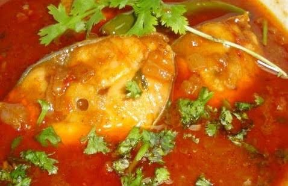

Chepala Pulusu is an Andhra fish curry, which is a famous spicy seafood
recipe, prepared by cooking fresh fish pieces in tangy tamarind sauce with lots of hot spices.

The Chepala Pulusu recipe is prepared with freshwater fishes,sesame oil, and ground masala
which gives a unique traditional taste and flavor to the dish.
This Andhra fish curry is an inviting treat for seafood lovers and can be a perfect side dish for white rice,appam, dosa,
idli, roti, and similar dishes for lunch and dinner.
Ingredients
Ingredients required to make the tem:
For Fish Masala Powder:
1 tbsp Coriander seeds
7 Red chillies
1/2 tsp Fenugreek seeds
8-10 Garlic
For Gravy
300 gm Fish pieces
1/2 cup Oil
2 Sprigs Curry Leaves
2 Onions
4 Green Chillies
1 tbsp Ginger Garlic paste
Salt
1/2 tbsp Turmeric
1 tbsp Red chillies powder
1 tbsp Coriander powder
1/2 liter Water
200 ml Tamarind Juice (extracted from 50 gm of Tamarind)
Coriander Leaves – Small bunch
Steps
Steps to prepare Chepala Pulusu:
Fry the masala ingredients on a low flame till they turn aromatic and blend them together and make a fine powder.
Blend Onions and Green chillies to a fine paste in a mixie jar.
Add Oil to a pan, add Curry Leaves, Onions and fry until the onions turn golden brown.
Add Salt and Ginger Garlic paste.
Now add Turmeric, Coriander Powder, Red Chilli Powder and fry.
Add Tamarind juice and water and boil the ingredients on a high flame.
Arrange the fish pieces in this boiling mixture carefully and Lower the flame. Allow it to cook until the oil floats on top.
In 15 mins, the gravy will thicken and the oil floats on top, now add chopped Coriander Leaves and Masala powder, and stir carefully
without disturbing the Fish pieces. Leave it for another 5 minutes, and your tasty Fish Curry is ready to serve.